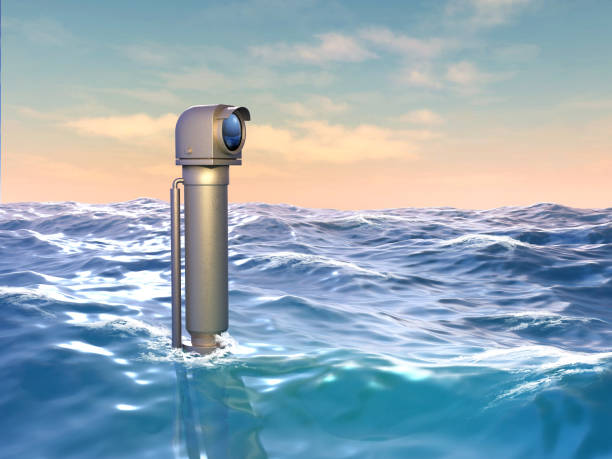

What is a Periscope?
A periscope is an optical instrument that lets you observe over, around, or through obstacles without direct line of sight. It uses reflection to bend light paths.
Scientific Facts
- Works purely on the law of reflection: angle of incidence = angle of reflection
- Mirrors/prisms are angled at 45° to bend light 90° twice → parallel but offset view
- Submarine versions reach 10–20+ meters high and include magnification, rangefinding, night vision
- Modern periscopes often use fiber optics or digital cameras instead of pure optics
Interactive 3D Model (Simple Periscope)
Rotate & zoom using mouse. This is a simplified visualization of the tube + angled mirrors.
Interactive 3D Periscope Model (drag to rotate, scroll to zoom)